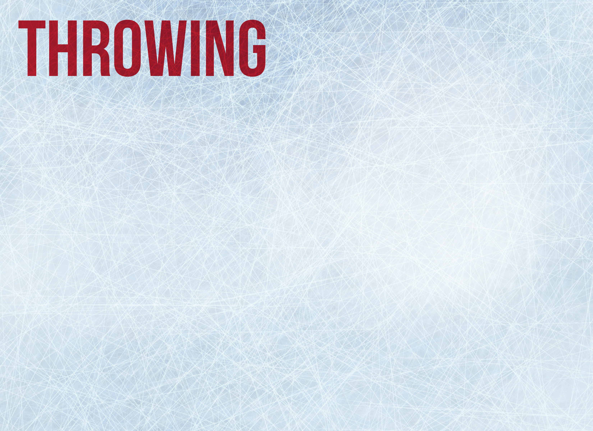
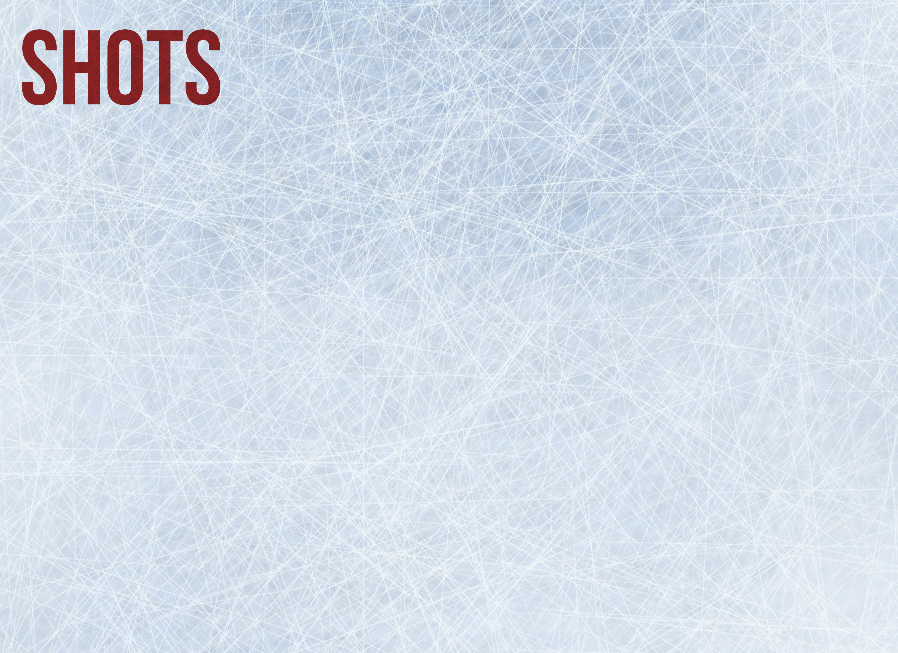

Olympic Sports: Curling
- 
- 

LEAD
The Lead is the first to throw the stone down the "sheet", or lane, of ice. This player must then sweep the ice for all other team members' shots.
SECOND
The Second, intuitively, throws second, and then sweeps all other team members' shots. These shots are more difficult because there are already stones in play, acting as obstacles.
VICE
The Vice throws third, sweeps the throws of the Lead and Second, and "holds brush", or directs the line of the Skip's throw from the opposite end of the sheet.
SKIP
The Skip is the team captain and throws last. This player holds brush for all other players, tells other players when to sweep, and observes the "curl" of the throws. The Skip has the most difficult shots because all other stones have been played.
Roll over the sheet of ice for terms and measurements.
Curling stones are made from a unique type of granite that is mined exclusively in Scotland, where the sport originated. They weigh approximately 42 pounds and cost approximately $1000 when purchased new.
Curling is played on level ice, but the ice has small "pebbles", or droplets of water, that create friction and cause the stone to curl.
A stone is delivered from the hack and must be released before the stone reaches the closer hog line. A player can re-throw if the stone did not reach the closer tee line.

Roll over each sheet of ice to see the shot.

DRAW
A stone that lands in the house
GUARD
A stone that lands short of the house and either protects a stone in the house or is put up first and then curled around later
TAKEOUT
A stone with sufficient "weight" to go through the house